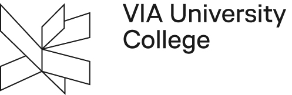

VIA University is not just about academic knowledge; it offers a unique study environment that combines independence, responsibility, and an international community. When I first joined VIA in 2021, I found myself immersed in an education system that encourages students to take charge of their own learning journey. This emphasis on personal responsibility and freedom characterizes the student experience, giving us the opportunity to shape our own educational path.
At VIA, students are expected to take an active role in the learning process. The teaching style focuses on students being responsible for their own education. We are encouraged to engage in dialogue, challenge ourselves, and ask questions, fostering a collaborative learning environment. This is quite different from many other educational systems where teachers take the lead. Instead, we work alongside teachers as guides, helping us develop critical thinking and problem-solving skills.
One of the things I appreciate most about VIA is its approach to education, where theory and practice go hand in hand. The Scandinavian education model emphasizes combining academic knowledge with real-world application, ensuring that what we learn in the classroom is directly relevant to our future careers. Every study programme includes practical training periods where students gain hands-on experience, working on real business challenges.
VIA’s focus on entrepreneurship, innovation, and sustainability is central to all study programmes. Being part of such an environment has allowed me to explore different perspectives and develop creative solutions to real-world problems. I’ve had the chance to participate in interdisciplinary projects, learning how to collaborate across different fields and work in multicultural teams. This emphasis on innovation and collaboration has broadened my mindset and strengthened my adaptability in an increasingly globalized world.
Project-based learning is a core part of the educational culture at VIA. We take on responsibility for planning and executing our projects, working either independently or in groups, while receiving guidance from our teachers. This project-based approach enhances teamwork, communication skills, and the ability to think critically under real-world conditions. VIA also values interdisciplinarity, allowing students to gain insights from various fields and apply them to their work, preparing us for diverse professional challenges.

Studying at VIA University is not only equipping me with academic knowledge and practical experience but is also shaping me into a more independent, innovative, and globally minded individual.